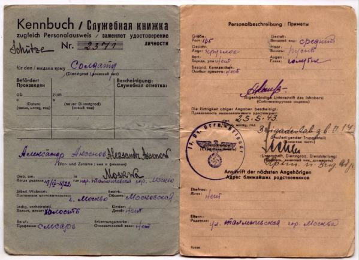

Warrax
Русский сепаратизм
Эх, взять бы автомат и разрядить обстановку...
А что это такое?
Это, уважаемые читатели, стремление разделить Россию на части.
Несколько примеров.
В Петербурге существует движение «Ингермландия», выступающее за независимость города. Отрывок из декларации: «Мы объявляем о начале строительства нового общества, основанного на принципах Декларации прав человека и свободной экономики. Мы призываем всех, кто неравнодушен к судьбе Санкт-Петербурга и области, к судьбе своих детей и внуков, всех, кто разделяет наши взгляды, присоединяться к нашей созидательной деятельности. Работа предстоит большая и тяжелая, но время выбрало нас. Вместе — победим! Да здравствует вольный Санкт-Петербург! Да здравствует независимая Ингерманландия! За вашу и нашу свободу!»
Выглядит, конечно, смешно. Однако в свое время так же смешно, дико и нелепо выглядела возможность отделения от России Украины и Белоруссии.
Вот еще лозунги сепаратистов, так сказать, с других мест: «Koenigsberg — вместо Калининграда! Tilsit — вместо Советска! Rauschen — вместо Светлогорска! Демократия — вместо сатрапии! Буржуазные Ценности — вместо ордынского “Третьего Пути”! ЕС — вместо СНГ!». Здесь отчетливо видна подоплека «против России за буржуазные ценности», которые даже с большой буквы написаны.
Еще объединение сепаратистов: «Сообщество создано с целью популяризации сепаратистских устремлений среди граждан Кенигсбергской Губернии. Начинать демонтаж Эрефии — удобнее всего именно отсюда. Freies Ostpreussen — Свободная Восточная Пруссия». В Калининграде существует даже некая «Балтийская республиканская партия», выступающая за отделение от РФ.
Существует проект создания некоей «Казачьей республики»:
«27 августа 2005 года в городе Челябинске сформирован
Организационный комитет по созданию и государственной регистрации Федеральной
Казацкой Национально-Культурной Автономии (ФКНКА). Оргкомитет возглавил атаман
Исетского казацкого войска М. Н. Лонщаков.
Статус этнической общности и организационная структура национально-культурных
автономий в сочетании с законодательством о реабилитации репрессированных
народов позволит казакам получить доступ к бюджетам всех уровней и независимость
от местных и московских чиновников.
И если в обозримом будущем Россия останется Федерацией, то казацкий народ обязан добиться признания своего законного права на национальное самоопределение сначала — в рамках реального казацкого местного самоуправления в местах их (казаков) традиционного компактного проживания, а в перспективе — восстановив, как минимум, казацкую национально- территориальную автономию, либо образовав в установленном законом порядке самостоятельный субъект Федерации — казачью республику.»
Я, между прочим, сам казак по происхождению (Хоперский округ), и прекрасно знаю, что казаки всегда отделяли себя от «мужиков» (обычных крестьян) на бытовом уровне, но при этом никогда не отделяли себя от русского народа в целом. А тут, отказывается, «этническая общность» появилась.
А вот лидер хит-парада: манифест «Свободная Тверь»:
«Древняя история нашего города неразрывно связана с доблестным сопротивлением, которое он долгое время оказывал москальским захватчикам.
...Огнем и железом была создана русская народность, предназначенная удерживать людей в подчинении москальского престола. ...
И вот уже Тверь (точнее — Тверской одномандатный округ №173) представляет в Государственной думе москаль из Академии МВД Владимир Васильев, причастный к жестокому уничтожению чеченских юношей и девушек вместе с заложниками в “Норд-осте”...
Довольно! Мы — не русские! Мы — тверичи — русского и украинского, татарского и башкирского, карельского, конголезского и сирийского происхождения. Мы не против жить в союзе с соседями, но хотим свободно договариваться об условиях этого союза, а не принимать диктат державного центра.
Программа-минимум: восстановление права Тверской области на избрание губернатора — из числа тверичей, а не заезжих варягов; повышение федерального статуса области до того, каким располагают республики в составе РФ.
Программа-максимум: выход Тверского края из сформированной насильственным образом Российской Федерации и создание нового, равноправного и свободного союза с теми регионами, которые этого пожелают.
Нет — империи! Даешь соединенные штаты России!»
Кстати, о Соединенных Штатах. Сепаратисты договариваются до призывов НАТО в Россию:
«...родственников среди номенклатуры у нас нет, т.е. в корпосистему мы не входим, а поскольку держателем жизненного пространства является именно она (достаточно сравнить уровень жизни любого из моих читателей — и уровень жизни обитателя “рублевки”) — то мы, получается, самые натуральные голодранцы. Оффшорные нищеброды без кавычек.
Но тогда, следуя элементарной бытовой логике и здоровым принципам этноэгоцентризма (коллективного этнического эгоизма), мы должны кооперироваться не с режимом, а с его врагами. Любыми врагами. Американцам нужны ресурсы России? Отлично, они все равно не наши. Авось чего и нам перепадет. Да и в конце концов, надо же кремлинов проучить! Месть — это святое.
Официально заявляю — в случае любого конфликта путинского жиртреста и стран НАТО считайте меня патриотом НАТО. Воевать не пойду, но чем могу, помогу белому брату.
Слава Бушу! Слава США! Слава НАТО!»
Обратите внимание на ход мысли. Для удобства распишу по пунктам.
1.Сепаратисты не входят в число богатого населения РФ.
2.Соответсвенно — не получают доли от распродажи России, а очень хочется.
3.И виновата в этом нынешняя власть. Nota bene: обвинение идет не в продаже Родины, а именно в «с нами не делятся».
4.Декларирована готовность к предательству (ресурсы-то все же страны, а не правительства) с мотивациями «авось поделятся из милости» и «главное — чтобы правительству хуже было, а что будет с народом — без разницы».
«Говнорашка это наш прямой и явный враг, а вот НАТО — потенциальный освободитель. НАТО помогло развалить интернациональный совок. И это хорошо: совершенно не хотел бы жить сейчас в одном государстве с десятками миллионов узбеков. Будем надеяться, что НАТО поможет нам уничтожить антирусскую Говнорашку.»
При этом ненавязчиво «забывается», что Потенциальный Освободитель дядя Сэм очень даже радовался резне русских и всегда вступался именно за террористов и бандитов. Можно заодно вспомнить и то, как Америка поступила с братским народом сербов, тоже очень показательно. А кроме того, я прекрасно помню, что когда я жил в одной стране — СССР — с «десятками миллионов узбеков», то в русских городах, даже в Москве, их были единицы. И не только узбеков, а всех нацменов. Не поверите — еще лет двадцать назад можно было целый день шляться по Москве и не встретить ни одного кавказца или азиата. Тогда никто не слышал о «национальных школах», в которых обучаются нерусские за русский государственный счет. Никто не называл улицы именем государственных преступников и не давал им звания академиков и уж тем более «Героя России». Обобщенно говоря: СССР не был русским национальным государством; но нынешняя эРэФия — однозначно является антирусским государством.
С этим, думаю, вряд ли кто будет спорить, но если сейчас de facto нация находится в состоянии войны с государством (правительством), значит ли это, что нужно призывать все разрушить. Это, позвольте напомнить, мы уже проходили век назад. Прежде чем что-то разрушить, необходимо осознать, что именно будет построено взамен.
Отрицание патриотизма как подчинения именно правительству не есть призыв к анархии — это призыв отречься от государства как самоцели. Государство должно служить нации, а не наоборот.
Хорошо обрисовал ситуацию Allex88: «..гениальные умозаключения унтерменша из национал-либеральной тусовки Широпаева, с его мазохистскими требованиями то “расколоть Россию на несколько кусков”, то отказаться от “имперских амбиций”, что уже прямо противоречит смыслу национал-социализма, ибо стремление к экспансии — признак любой здоровой нации, если она способна на нее, то флаг ей в руки. Восхваляет Третий Рейх и Гитлера, хотя Гитлер бы его первого в концлагерь за подобную деятельность бы отправил.
Интересно, что движет подобными персонажами?
Просто предательство. Нигилистические тенденции, подрывающие нацию, иногда придают гнусным по своей сущности действиями позитивный и даже благородный оттенок...»
Конфедерация?
Сепаратисты выставляют в качестве идеала конфедеративное устройство государства. Мол, сейчас надо всем разделиться на удельные княжества, чтобы развалить РФ, а затем неким волшебным образом (по щучьему велению; по мановению волшебной палочки; в результате выполнения Гарри Поттером домашнего задания...) эти регионы соединятся в Великую Русь, Которая Всем Покажет.
Пишет Илья Лазаренко (сокращено):
«Великий Новгород — это символ. Не тот областной центр, который стоит на месте вырезанной и рассеянной столицы Северной Руси, но тот духовный центр, что ярко выражает европейскую альтернативу развития, упущенные возможности для всех, кто оказался загнан под немилосердную длань московитского ханства.
Естественно, было бы неверно безоглядно броситься в объятия структур ЕС. В современной Европе тоже не все ладно. Однако базовые ценности, лежащие в основе европейской цивилизации — это и наши ценности тоже. “Арийская идея” — это свобода личности, частная собственность и прогресс. Никак иначе. Восточный коллективизм, пренебрежение к праву собственности, инертная “стабильность” — все это совсем из другой, “параллельной” вселенной.
...возможно ли превращение РФ в русское национальное государство? К сожалению, нет. Это государство специально не создано для того, чтобы быть национальным. Кроме того, антирусский и антидемократический режим евразийского проекта никогда не позволит подобных превращений. Именно поэтому стоит говорить только о полном переформатировании государственности. Идущая в русле общемировых тенденций, обусловленная распадом империи и ускоренная чудовищной колониальной политикой московитского режима регионализация — это возможность создания ряда русских республик, объединенных в Русскую Конфедерацию. Отвергнутый регионами “центр”, а точнее — “Кремль”, найдет свой бесславный конец в полном одиночестве. Возможно, даже только в границах Садового Кольца. И бояться этого не стоит. Объединенная горизонтальными связями Конфедерация в состоянии, после развода с северо-кавказскими рецепторами, Татарией и Башкирией наладить работу и энергетических, и транспортных структур, и создать новую, профессиональную армию. Конфедерализации боится лишь ханская ставка, ибо это ее конец. Сам процесс обретения форм государственного бытия русскими субэтносами и русским этносом в целом, сопряженный со становлением гражданского общества, неизбежно приведет к рождению новой русской нации, ушедшей из Азии и вернувшейся на древнюю родину — Русь.»
Ляпов тут много (тот же миф о Новгороде-всем-таком-независимом), но в контексте статьи важно: 1.фетиш частной собственности, т.е. либерастия; 2. декларация невозможности смены власти в РФ на национальную (без каких-либо доказательств); 3. декларация необходимости «развода» с отдельными территориями; 4. декларация наличия «русских субэтносов» как отдельных структур; 5. педалирование сентенции «а потом обратно объединимся, и все будет хорошо».
Прежде чем рассмотреть маразм поподробнее, наберем материал для анализа.
Вадим Штепа, «Долой сепаратизм!»:
«Как только где-то заходит речь о региональном самоуправлении, из-за кремлевских зубцов посредством останкинской трубы раздается апокалиптический вой о “распаде России”. Будто бы русские регионы хотят “разбежаться” — тогда как их не устраивает лишь эта “вертикальная” система, когда губернатор каждой области зависит не от избирающего его народа, а от назначающего его Кремля. Русские земли уже и так фактически “отделены” друг от друга — а теперь им напротив, надо восстанавливать взаимные экономические, политические, информационные, культурные контакты, разрушенные гиперцентралистской политикой.
Имперцы запугивают страну возможной “потерей” тех или иных регионов — от Калининградской области до Южных Курил. Но это типичная точка зрения с кремлевской колокольни. “Начинается земля, как известно, от Кремля”, — учит нас со школьных лет бессменный автор советских и постсоветских гимнов… Однако не пора ли уже спросить самих жителей этих регионов — сочтут ли они особой “потерей” для себя, если за них перестанет “говорить Москва”?
...Сегодня русским регионам, помимо самоуправления, необходимо восстановить свою уникальную культурную идентичность, раздавленную имперской унификацией. ...
Так, к примеру реконструкция сибирского языка на основе северорусских и казацких говоров проводится в сети активистами из разных регионов и стран — от самой Сибири до Петербурга, Латвии, Беларуси и Украины. Этот проект, вполне адекватный для эпохи постмодерна, вовсе не “разделяет”, но как раз сближает лингвистов и культурологов отовсюду. …от московских коллег доносится лишь непрерывное ворчание в адрес “сепаратистов” и угрозы закрыть их сайт на Википедии. Так кто от кого “отделяется”? Те, кого объединяют интересные творческие эксперименты, или те, кто обуреваем жаждой “запретить” все непохожее на себя?»
И, опять же, обратите внимание на саморазоблачение. Вот за что я люблю интеллигентов — они всегда сами про себя такое скажут, что никто не придумает, как бы не старался. Нет, дело не в маразмах вида «русским регионам нужно заново налаживать культурные контакты» (культура-то русская везде), и даже не в том, что мелкие княжества не смогут существовать раздельно даже на том уровне, в котором они находятся в эРэФии. Суть — именно что в «адекватности для культуры постмодерна». Вместо реалий политики, социологии и так далее — над русскими предлагается поставить постмодернистский эксперимент. Мило, не так ли?
Кстати, вот вам наглядная иллюстрация:
«Сибирской говор — вьотошной полночнорусской говор, которой идьот ешшо со времьов Великово Новгорода и дошедшы до нашенских дньов в нареччах сибирсково народа (чалдонов, староверов и козаков), и которой имат ешшо и краснословну колыб, а дык ить и многи речаловы столмачены и спеты. Ешшо ведомой сибирской народ окромя чалдонов ето летьгола (латгальцы)... Словы в сибирском взяты с полношнорусских да сибирских говоров, со словника Даля, да ешшо с говоров дружных народов Сибири мальохо. Сибирска говорогородка шыбко рознитса от россейсково...»
«Россейской говор (росс. Русский язык) — мешанной восходнословянской и полуденнословянской говор, какой был сдуман на кондовине церьковнословянсково говора в 17-18 столеттях.
На россейским говоре писавшы баюны Россейской анперии, сгонодоблены со всех народов: татарин Тургенев, украинец Чехов, поляк Достоевской, жыды Ильф и Петров, личнось неврубной народноси Пушкин, и никому-то из них етот мажной говор не был родимым. Ить весь руской народ обнакновенно лекотал дружно.»
Чистейший постмодернизм, не спорю. Если собрать в кучу все локальные диалекты по принципу «лишь бы не похоже на русский литературный», и добавить ешшо с говоров дружных народов Сибири мальохо, и не такое получится. Вот только отношение это имеет к разности этносов? В конце концов, немецкий «хохдойч» отличается от местных диалектов куда сильнее, чем процитированный суржик от русского, но никто не подвергает сомнению существование единой немецкой нации. Которая, между прочим, собиралась в единое целое Гитлером, потом была специально раздроблена на ГДР и ФРГ, а затем объединилась заново. А русских предполагается разъединить. С чего бы это, а?
Существуют, замечу, и модификации дробления. Владимир Попов:
«Ряд русских республик, объединенных в Конфедерацию, я вижу
следующим: Русская республика, Белорусская республика, республика Украина,
республика Южная Сибирь (Бывший Север Казахстана), Приднестровская Русская
республика, Крымская республика. Есть предложение вместо Русской республики
сделать 52 республики — но эта идея тупиковая и дурная, на мой взгляд. (Оставьте
ее Белковскому). Такой конгломерат будет нежизнеспособным — его одна Чечня
завоюет. Как Израиль против арабских государств.»
Обратите внимание (как часто я буду писать эту фразу!): имеется полное понимание
того, что централизованная власть определенно наведет свой порядок в
раздробленных «русских республиках», но при этом декларируется их создание.
Оруэлл восстает из гроба и аплодирует стоя.
Еще из интернета: «Мне говорят — “Вы хотите развала России?”. Да мне, если честно, [=безразлично]. Ну, отвалятся всякие ингушетии и дагестаны, так и [= все равно]. Ах, Россия развалится на Сибирь, Московию и прочие образования. Ну, как развалится, так и соберется. Исторические процессы неумолимы. Нынешнее говнообразование нежизнеспособно, если ему нужно умереть — оно должно умереть. “Неприятность эту мы переживем”.
Радует то, что будет твориться в этих осколках России. Они стремительно побелеют. В них установятся разные виды правления. И начнется, как это было всегда, поиск оптимальной формы существования, которая, в силу менталитета народа, объединит вновь все осколки Руси. И все начнется заново.
Чтобы возродиться — нужно умереть. Не надо бояться смерти — это неконструктивно. То, что мы видим — смерть страны. Страна ходит под себя, говорит глупости, она неадекватна, агрессивна, заражена паразитами и попросту обречена. Эфтаназия ей просто необходима.
Россияния, умри! Да здравствует Русь!»
С моей точки зрения, наглядно видна как необоснованная декларация «объединит вновь», так и рефрен «смерть страны необходима». Именно что не «смена правительства», а смерть страны.
Михаил Вербицкий: «Гэбнюков и прочую номенклатурную мразь можно победить, только тотально сломав систему. Потому что система заточена на управление сволочью и только ею и максимально сволочными методами. И ведь гниль идет не от Чубайса и не от коммунистов, гнила она всю историю правления Романовых. Я уверен, что если избавить регионы от диктата Москвы, наука там поднимется. Даже в бантустанах. В Нигерии [связующее междометие] есть наука, у нас вот в Глазго из университета Абеокута недавно [кастрированный баран, цыганск.] доклады читал. Из аграрного университета Абеокута! Про аменабельные банаховы алгебры! Образованное население нужно везде, кроме банановых и сырьевых бантустанов вроде РФ. ... Мне вообще [= ничего] не нужно, мне англичане платят столько, что на три семьи, как моя, хватит.»
Очень показательный пример, хотя и на узком поле обсуждения. Обратите внимание на «мне все равно, я-то ого-го сколько зарабатываю, причем не в России, так что здесь — ломаем все, на мне не отразится». Опять же, не буду придираться к тому, что банаховы алгебры можно изучать и развивать с тетрадкой и карандашом, а, скажем, физикам требуется синхрофазатроны. Астрономам вообще куча техники на орбите очень не помешала бы... Бантустан на это способен?
Смотрим «аргументацию» Вербицкого далее:
«Я просто исхожу из исторического опыта десоветизации.
1. Прибалтика и Восточная Европа. Успех сногсшибательный (кроме Сербии, которая сопротивлялась десоветизации). В 1990-х в Восточной Европе и Прибалтике было кисло, но сейчас эти страны в числе самых успешных. Судить можно по науке, которая там процветает. Что в России, мы знаем: ситуация критическая, и делается хуже год от году.
2. Распад Чехословакии. Прогноз был неудовлетворительный, а результат — великолепный: в Словакии пересажали чиновников, коррупцию давят только так.
3. Пост-советское пространство. Чурки и кавказоиды построили у себя чурко-кавказоидные азиатские империи, но это и понятно. Славяне (Украина, Белоруссия) живут не хуже России, а Белоруссия так просто лучше. Причем коррупция там меньше, бандитизма меньше, за Интернет не сажают. И воссоединяться с Россией массы совершенно не хотят.
4. Тезис “распадется РФ, будет 80 маленьких Туркмений” представляется мне русофобским. Русские не туркмены, русские — такой же европейский народ, как и прибалты, и достойны не худшего.»
Не буду акцентировать внимание на том, что в п.4 русские ставятся выше туркменов, но не выше прибалтов (по какой шкале?). Белоруссия, кстати говоря, живет лучше именно потому, что не стала дробиться, а продолжила традиции СССР на новом качественном уровне, за что Батьке честь и хвала. Честно говоря, я не в курсе обстановки в ex-Чехословакии, но замечу, что «хорошесть» жизни сводится именно к «пересажали чиновников». Давайте глянем на первый пункт, который сногсшибательный. Очень показателен пример с Сербией — оказывается, дело не в оголтелой албанизации при поддержке НАТО, а в том, что сербы «сопротивлялись десоветизации». Я просто приведу свидетельство знакомой о жизни из первых рук:
«9 декабря 2003 года газета “Час" сообщила об откровенной пошлости учебника латышского языка для 8-го класса. Вчера по поводу этого же “учебника жизни” резко выступил генеральный секретарь Латвийской социал-демократической рабочей партии Ансис Добелис. Тревогу забили родители, которые заинтересовались, зачем, в частности, в учебнике рассказывается о том, как девушка за 10 латов делает массаж подобравшему ее на дороге водителю-пенсионеру.
Министр Ина Друвиете затребовала от Агентства по освоению латышского языка объяснений по поводу качества книги.
Агентство по освоению латышского языка оправдывается тем, что хотело быть ближе к жизни.
Они в чем-то правы, ибо Латвия по-черному — “Второй Таиланд” зовется. Проституцией уже со школьных скамей занимаются. Благо иностранцев у нас теперь пруд-пруди. А работы-то не найти. Если только по знакомству. Не любят у нас брать школьников на работу (а дети у нас теперь из школы в 19-20 лет уходят). Даже в Макдональдс. Потому что на полставки. А мамы-папы частенько чад не тянут. А тут — легко и быстро, и деньги неплохие. Наслушалась, ибо в моем классе присутствовали валютные девочки, которые любили похвастаться подарками и доходами.
А вообще, жуть. С образованием у нас крантец.»
Это — с образованием; а с наукой, согласно Вербицому, все шоколадно — жаль, что он аргументов не предоставил.
Локотский протекторат
Прежде чем перейти к анализу мотиваций сепаратистов, а также к последствиям их концепции (в случае реализации), рассмотрим на Фетиш — именно так, с большой буквы и не менее — Локотскую республику, которая вечно подсовывается как образец «истинно русского самоуправления без сталинской тирании».
Любопытно, что в 99-ом номере “Парламентской газеты”, под заглавием “Локотьская альтернатива” была опубликована статья некоего Сергея Веревкина, что обозначает, что наши, так сказать, парламентарии, не против. Что характерно.
Процитирую (в сокращении) разбор статьи ЖЖ-юзером gezesh:
«Автор ошибается с самого начала: никакой “Локотьской республики” никогда не было. Была только “Локотская”. Ошибается автор и дальше: обер-бургомистра Локотского самоуправления звали Каминский, а не Каминьский. Хотя допускаю, что в той деревне, из которой родом автор, подобные ошибки являются фонетической нормой. Но это далеко не самые главные просчеты господина Веревкина.
Судя по всему, автор не понимает, что все эти местные самоуправления и автономии нужны были Рейху ровно до тех пор, пока местные добровольцы крошили партизан, а те, в свою очередь, крошили добровольцев, и, тем самым, для реальных действий на фронте освобождалась одна-две немецкие дивизии (плюс еще и необходимость в отрядах полицаев отпадала), да пока русские пахали, чтобы обеспечить огромную немецкую армию продовольствием. Когда необходимость в огромной армии отпала бы, автоматически отпала бы необходимость и в местном русском самоуправлении, и все эти “русские республики” быстро прекратили бы свое существование.
Автор утверждает, что Локотская республика была создана еще до прихода в район немцев. Он вновь ошибается. Советские войска были выведены из Локтя только в конце сентября, а части Вермахта, в лице 216-й пехотной дивизии под командованием генерал-майора фон Гильза, вступили туда уже 4 октября. За неделю о создании какой-то там республики и речи быть не может. Все, что удалось сделать Воскобойнику с Каминским, — это с кучкой единомышленников-авантюристов вроде Мосина, Терешкина, Королева и т.д. организовать некое “народное собрание” (в лице как раз этих и еще некоторых товарищей), на котором и было принято решение о создании Локотской республики. Сами локотчане об этом пока что не догадывались, но у них все было впереди. Итак, в Локоть входят немцы, перед ними тут же падает ниц товарищ Воскобойник, клятвенно заверяет их в собственной надежности и бепредельной верности идеям Рейха и лично фюреру и умоляет об аудиенции у какого-нибудь верхнего чина немецкой освободительной армии. Эту аудиенцию дал ему папа Панцерваффе — Гудериан, занимавший в то время должность командующего 2-ой танковой армии. И он же дал свое благословление на создание Локотской республики. И именно с этого момента Воскобойник начинает развертывать в Локте бурную деятельность. Кстати, Воскобойник был именно назначен главой самоуправления (в этом свете, совершенно непонятно, причем тут “республика”). Таким образом, заявляя, что самоуправление было создано без участия немцев, Веревкин откровенно лжет.
Автор поет дифирамбы властям республики, рассказывая про десятки школ, театров, “читальных изб”, больниц, заводов и проч. Все замечательно, только вот я плохо понимаю, а чем тогда автору СССР не угодил, если количество школ и медпунктов для господина Веревкина — главный показатель адекватности власти? При Сталине школы и больницы открывались целыми пачками. Строились библиотеки, театры, кинотеатры, появились сотни новых газет, число грамотных возросло на порядок, было введено обязательное образование, открывались вузы, в несколько раз увеличилось число издательств и так далее.
Чем же на самом деле была Локотская республика? Да, собственно, ничуть не менее тоталитарным государством, чем СССР. Республика была полностью подконтрольна немецкому командованию.
Кстати, приказ №1 товарища Воскобойника, помимо прочего, включал такую фразу: “Всех сопротивляющихся настоящему приказу уничтожать на месте”. Вся власть была сосредоточена целиком и полностью в руках одного человека, который даже суды зачастую проводил лично. Публичные казни были нормой. Стоит заметить, что “добровольцы” в РОНА набирались насильно из мужчин призывного возраста. Отказ служить "на благо отечества" карался по законам военного времени — то бишь расстрелом.
Экономика в республике по-прежнему была плановой. В план включались заказы немецкого командования и потребности самой республики.»
Короче говоря, статус Локотской республики как «национального образования» был обязан командующему 2-й танковой армией Гудериану и командующему группой армий «Центр» фельдмаршалу фон Клюге.
Воскобойник был именно что назначен обер-бургомистром — какое тут самоуправление? Отряд Каминского подчинялся командованию 532-го тылового корпуса сил безопасности (KTR–532). В качестве наглядной иллюстрации того, насколько русским было это “государство без немцев и большевиков”, служебная книжка бойца РОНА:

Обратите внимание: в документе «истинно русского государства» основной язык — немецкий. И что за русская птица с русским крестиком на печати?
Каминский развернул борьбу с партизанами; весной 1943 года РОНА состояла из пяти полков, в которой насчитывалось 12000 человек.
В августе 1943 года положение Локотского округа стало угрожающим, бойцы РОНА и все, кто не желал оставаться при Советской власти (таких в общей сложности оказалось около 30000), ушли с немцами. Если исходить из 12 тысяч отряда, то получаем его же численность с семьями — то есть, ушли с немцами те, кому бы однозначно не поздоровилось бы. Напомню, что численность населения «республики» была около 600000 человек.
В июле 1944 «бригада Камински» была официально включена в войска СС как «штурмовая бригада РОНА». Одновременно Каминский получил звание бригаденфюрера СС (при этом он не был членом НСДАП) — в середине 44-го в СС de facto принимали всех желающих.
В августе солдат Каминского бросили на подавление Варшавского восстания, где они проявили себя как бандиты и мародеры. На требование немецкого командования унять своих подчиненных Каминский ответил, что его люди потеряли в борьбе с большевизмом все свое имущество, и он не видит ничего дурного в том, что они стремятся поправить свое материальное положение...
Еще факты (Б.С. Соколов, «Локотская республика» ):
«17 ноября 1942 года Каминский вынужден был издать специальный приказ “О борьбе с пьянством”: за курение самогона и употребление оного при исполнении служебных обязанностей полагалось наказание военно-полевого суда — вплоть до расстрела.»
Не правда ли, хорошая дисциплина была в отряде?
«Несмотря на все кары, которыми грозил обер-бургомистр и комбриг, в Локотской республике процветало не только пьянство, но и дезертирство. 20 ноября 1942 года, то есть еще до окружения немцев под Сталинградом и всего через несколько дней после высадки союзников в Северной Африке и поражения Эрвина Роммеля под Эль-Аламейном, в “Голосе народа” появилась статья “О дезертирах и партизанах”. Тон ее был весьма тревожный.»
«Из бригады Каминского… продолжается дезертирство и случаи перехода на сторону партизан. По данным на 4.10 база продовольственного снабжения Лепельской зоны отпускает Каминскому продукты только на 3665 человек. Вероятно, это все, что осталось от его бригады, насчитывавшей в августе 12 тысяч человек».
«23.9 в районе Лепель немцы расстреляли командира полка изменников из бригады Каминского за попытку перехода его полка на сторону партизан. 4, 6 и 7 батальоны этой же бригады восстали против немцев и с боем отошли в леса для присоединения к партизанам».
Когда бригаду РОНА влили в состав 1-й власовской дивизии, состояние каминцев было, мягко говоря, удручающим. Инспектировавший бригаду офицер РОА В.Т. Жуковский позднее рассказывал советским следователям: «После посещения нами этой бригады мы составили акт о ее боевой готовности, где было также указано, что солдаты этой бригады являются морально разложившимися и занимаются бандитизмом и грабежом. Что у всех солдат при себе имеется большое количество золотых вещей, награбленных у мирных жителей».
Хороший образец для подражания, как думаете?
Захват ресурсов через расчленение России
Не буду изобретать велосипед, а приведу выдержки из статьи Михаила Делягина «Московский консенсус» — доклад Института проблем глобализации, из которого ясно: либо Россия вернет стране суверенитет — либо продолжение катастрофы, вплоть до реальной ликвидации России, — неизбежны.
Россия вновь попадает в центр мировой политики, так как решение ключевого вопроса новой американской стратегии — энергетическая блокада Китая — требует отказа России от стратегического сотрудничества с ним в двух важнейших сферах: поставок энергоносителей и современных вооружений.
Базовый подход аналитиков развитых стран к России включает:
-
«интернационализацию» природных ресурсов Сибири и Дальнего Востока, то есть переход их под контроль глобальных западных корпораций, дополнительно обеспечиваемый политической волей контролируемых Западом российского правительства и президента (под которым подразумевается Медведев, но может быть и любой другой либерал — Козак, Шувалов, Касьянов); при этом считается, что только контроль глобальных корпораций Запада позволит не допустить распространения контроля Китая на соответствующие месторождения (неизбежного, с точки зрения Запада, через 10 и даже меньше лет); предположение, что ослабление национального российского контроля неминуемо вызовет автоматическое усиление китайского влияния, не рассматривается в принципе и отметается «с порога»;
-
«демократизацию» России, под конторой понимается возврат большого числа старых и передачу многих новых властных функций на уровень регионов с установлением прямых отношений развитых стран с региональными правительствами; Россия при этом сохраняется как целостность, но «размывается»; происходит ее конфедерализация; это не противоречит укрупнению регионов, которое, делая регионы более сильными, содействует этой политике; в качестве одного из инструментов ослабления федерального центра предусматривается обеспечение свободы СМИ, которые будут контролироваться крупным бизнесом, нуждающимся в Западе, и Западом напрямую (как в 90-е годы).
Данный вариант, насколько можно понять, был поддержан как минимум наиболее либеральной частью российской делегации в Давосе, что вызвало восторг у представителей Запада. Именно это и позволило зафиксировать «Московский консенсус» в его нынешнем виде.
Однако, по некоторым данным, российские либералы в Давосе предложили Западу пойти дальше, описав разработанный во второй половине 90-х сценарий «освобождения от Северного Кавказа», по которому Россия в рамках идеологемы «хватит кормить чурок», характерной для перелома 80-90-х годов и приведшей к распаду СССР, должна отделиться от Северного Кавказа полноценной государственной границей. ...
Проблемы, связанные с попыткой отделения от Северного Кавказа, понятны:
-
техническая трудность этого, так как многие народы живут и на территории «титульных» республик, и на прилегающих территориях формально российских регионов, и на значительном удалении от «титульных» республик;
-
мощный импульсе к развалу России, которое даст такое решение (неясно, чем коми, карелы, якуты и калмыки хуже народов Северного Кавказа) и подготовка к которому уже ведется (так, недавно в Венгрии Ястржембский одобрительно отозвался об идее встречи руководства России с руководством Венгрии и Финляндии как государств угро-финских народов; их выделение из общего состава российских народов спровоцирует рост их национального самосознания и создаст угрозу для территориальной целостности России в полном соответствии с «максимой Злобина» — «а кто вам сказал, что распад СССР завершен?»);
-
стимулирование этнических чисток в западной части Северного Кавказа: выдавливание откуда русскоязычного населения идет и еще не завершено, а в Адыгее (где оно составляет три четверти населения), насколько можно понять, только еще начинается.
Однако основная проблема заключается в том, что «сбрасывание» Ингушетии, Чечни и Дагестана, которое имеют в виду российские либералы, неминуемо приведет к бунту и рывку к независимости в западной части Северного Кавказа. При этом черкесы предъявят права на все Черноморское побережье Северного Кавказа до Новороссийска и Анапы включительно, что создаст мощный очаг не только внутреннего, но и международного напряжения (так как чекесская диаспора натравит на ослабленную и превращающую себя в добычу Россию страны Ближнего Востока и, возможно, Турцию, в которых она обладает значительным влиянием).
Характерно, что аналитики развитых стран, вполне равнодушные к судьбе внутренней части Северного Кавказа, проявили, по имеющимся данным, огромный энтузиазм именно в отношении идеи отторжения от России Черноморского побережья Северного Кавказа как имеющего стратегическое значение для политики в акватории Черного моря и для маршрутов транспортировки нефти.
Татарстан и Башкирию предполагается оставить в составе конфедеративной России, так как их независимость дезорганизует поставки нефти и газа на Запад, хотя они получат наибольшие права и свободы, что позволит им быть фактически независимыми, оставаясь в составе России если и не совсем формально, то только трубопроводом. В частности, Российской Федерацией с ними будут подписаны отдельные соглашения, аналогичные подписываемым в середине 90-х.
Хорошо забытое старое
1.Генеральный план «Ост».
Сразу замечу, что доказательств существования плана «Ост» не имеется: его текста до сих пор не обнаружено. В ходе Нюрнбергского трибунала этот план фигурировал в виде несколько иного документа — «замечаний и предложений по генеральному плану “Ост”» начальника одного из отделов министерства по делам Восточных территорий Э. Ветцеля, не более того. При этом судилище было предвзято, что даже не скрывалось. «Устав Международного Военного Трибунала для суда и наказания главных военных преступников европейских стран оси», Статья 19: «Трибунал не должен быть связан формальностями в использовании доказательств. Он устанавливает и применяет возможно более быструю и не осложненную формальностями процедуру и допускает любые доказательства, которые, по его мнению, имеют доказательную силу.» Статья 20: «Трибунал может потребовать, чтобы ему сообщили о характере любых доказательств перед тем, как они будут представлены, с тем, чтобы Трибунал мог определить, относятся ли они к делу.» Статья 21: «Трибунал не будет требовать доказательств общеизвестных фактов и будет считать их доказанными. Трибунал также будет принимать без доказательств официальные правительственные документы и доклады Объединенных Наций, включая акты и документы комитетов, созданных в различных союзных странах для расследования военных преступлений, протоколы и приговоры военных или других трибуналов каждой из Объединенных Наций.». Статья 24«е»: «защитники представляют такие доказательства в опровержение доказательств, представленных другой стороной, какие Трибунал признает допустимыми.»
Как видите, обвинение могло подсунуть любую фальшивку — быстро и не осложняя себя доказательством подлинности документа. Тем не менее, процитирую фрагменты «замечаний и предложений».
«Прежде всего надо предусмотреть разделение территории, населяемой русскими, на различные политические районы с собственными органами управления, чтобы обеспечить в каждом из них обособленное национальное развитие...
Пока можно оставить открытым вопрос о том, следует ли учредить имперский комиссариат на Урале или здесь надо создать отдельные районные управления для проживающего на этой территории нерусского населения без специального местного центрального органа управления. Однако решающее значение здесь имеет то, чтобы эти районы административно не подчинялись немецким верховным властям, которые будут созданы в русских центральных областях. Народам, населяющим эти районы, нужно внушить, чтобы они ни при каких обстоятельствах не ориентировались на Москву, даже в том случае, если в Москве будет сидеть немецкий имперский комиссар...
Следует также подумать об отделении Северной России в административном отношении от территорий, находящихся под управлением имперского комиссариата по делам России... В целом в остальных центральных областях России политика отдельных генеральных комиссариатов должна быть направлена по возможности на разъединение и обособленное развитие этих областей.
Русскому из горьковского генерального комиссариата должно быть привито чувство, что он чем-то отличается от русского из тульского генерального комиссариата. Нет сомнения, что такое административное дробление русской территории и планомерное обособление отдельных областей окажется одним из средств борьбы с усилением русского народа.»
В контексте статьи не имеет значения, был ли разработан план «Ост», или же существовал только в виде проекта, к которому и писал свои замечания Ветцель, или же план является фальсификацией с начала и до конца. Если кому интересно — то с моей точки зрения, наиболее вероятен второй вариант.
Дело именно в том, что в качестве иллюстрации преступных намерений было приведено именно стремление разделить Россию (Советский Союз).
Впрочем, помимо гипотетического плана, аналогичные намерения были озвучены в других документах.
Из речи рейхсляйтера Розенберга о политических целях Германии в предстоящей войне против Советского Союза и планах его расчленения, 20 июня 1941 г.:
«Сегодня же мы ищем не “крестового похода” против большевизма только для того, чтобы освободить “бедных русских” на все времена от этого большевизма, а для того, чтобы проводить германскую мировую политику и обезопасить Германскую империю. Война с целью образования неделимой России поэтому исключена. ... Задача нашей политики — органически выкроить из огромной территории Советского Союза государственные образования и восстановить их против Москвы, освободив тем самым Германскую империю на будущие века от восточной угрозы.»
Директива начальника штаба верховного главного командования вооруженных сил Германии об установлении оккупационного режима на подлежащей захвату территории Советского Союза, Ставка верховного главнокомандующего, 13 марта 1941 г.:
«На оккупированной территории, находящейся за районом боевых действий, будет организовано собственное политическое управление. Эта территория с учетом национальности ее народонаселения и в приблизительном соответствии с границами групп армий будет разделена вначале на области: Северную (Прибалтика), Центральную (Белоруссия) и Южную (Украина).»
2.Збигнев Бжезинский
Думаю, не надо представлять этого человека, как и описывать его отношение к России.
Его выступление на радио «Свобода» 16 сентября 1998 в передаче «Американские политологи о российском кризисе»:
«Я повторю еще раз: на мой взгляд, шансы для успешного развития России значительно возрастут, если страна будет преобразована в конфедерацию их трех государственных единиц — Европейской России, Центральной России с Сибирью и Дальневосточной России. Каждый из этих российских регионов будет иметь гораздо больше возможностей для эффективного и конструктивного сотрудничества со своими соседями: Европейская Россия — с Европой, Центральная Россия — с Центральной Азией, этим перспективным и богатым природными ресурсами регионом, привлекающим иностранные инвестиции, и Дальневосточная Россия — с Кореей, Японией и Китаем. Такое разделение, в том числе такое распределение возможностей для сотрудничества внутри конфедеративной России, позволит ей возродиться гораздо более быстрыми темпами.»
Обратите внимание, что постулируется сотрудничество с соседями, а вовсе не между участниками такой конфедерации.
Цели не скрываются. Еще десяток лет назад Бжезинский писал в книге «Великая шахматная доска»:
«Роль, которую в долгосрочном плане будет играть Россия в Евразии, в значительной степени зависит от исторического выбора, который должна сделать Россия, возможно еще в ходе нынешнего десятилетия, относительно собственного самоопределения. Даже при том, что Европа и Китай расширяют зоны своего регионального влияния, Россия несет ответственность за крупнейшую в мире долю недвижимости. Эта доля охватывает 10 часовых поясов, и ее размеры в 2 раза превышают площадь США или Китая, перекрывая в этом отношении даже расширенную Европу. Следовательно, потеря территорий не является главной проблемой для России. Скорее огромная Россия должна прямо признать и сделать нужные выводы из того факта, что и Европа, и Китай уже являются более могучими в экономическом плане и что, помимо этого, существует опасность, что Китай обойдет Россию на пути модернизации общества.
В этой ситуации российской политической верхушке следует понять, что для России задачей первостепенной важности является модернизация собственного общества, а не тщетные попытки вернуть былой статус мировой державы. Ввиду колоссальных размеров и неоднородности страны децентрализованная политическая система на основе рыночной экономики скорее всего высвободила бы творческий потенциал народа России и ее богатые природные ресурсы. В свою очередь, такая, в большей степени децентрализованная, Россия была бы не столь восприимчива к призывам объединиться в империю. России, устроенной по принципу свободной конфедерации, в которую вошли бы Европейская часть России, Сибирская республика и Дальневосточная республика, было бы легче развивать более тесные экономические связи с Европой, с новыми государствами Центральной Азии и с Востоком, что тем самым ускорило бы развитие самой России. Каждый из этих трех членов конфедерации имел бы более широкие возможности для использования местного творческого потенциала, на протяжении веков подавлявшегося тяжелой рукой московской бюрократии.
Россия с большей вероятностью предпочтет Европу возврату империи, если США успешно реализуют вторую важную часть своей стратегии в отношении России, то есть усилят преобладающие на постсоветском пространстве тенденции геополитического плюрализма.
Укрепление этих тенденций уменьшит соблазн вернуться к империи. Постимперская и ориентированная на Европу Россия должна расценить предпринимаемые в этом направлении усилия как содействие в укреплении региональной стабильности и снижении опасности возникновения конфликтов на ее новых, потенциально нестабильных южных границах. Однако политика укрепления геополитического плюрализма не должна обусловливаться только наличием хороших отношений с Россией. Более того, она важна и в случае, если эти отношения не складываются, поскольку она создает барьеры для возрождения какой-либо действительно опасной российской имперской политики.
Отсюда следует, что оказание политической и экономической помощи основным вновь обретшим независимость странам является неразрывной частью более широкой евразийской стратегии. Укрепление суверенной Украины, которая в настоящее время стала считать себя государством Центральной Европы и налаживает более тесное сотрудничество с этим регионом, — крайне важный компонент этой политики, так же как и развитие более тесных связей с такими стратегически важными государствами, как Азербайджан и Узбекистан, помимо более общих усилий, направленных на открытие Средней Азии (несмотря на помехи, создаваемые Россией) для мировой экономики.»
Вам нравится, как очаровательно и мило заявляется о том, что «потеря территорий не является главной проблемой для России»? Населения, видимо, тоже — а что, русских пока еще много. Даже слишком, с точки зрения таких вот бжезинских.
Честно заявляется, что «оказание политической и экономической помощи основным вновь обретшим независимость странам является неразрывной частью более широкой евразийской стратегии». Исполнение этой доктрины мы видим сейчас воочию.
Справедливо отмечается, что «децентрализованная Россия была бы не столь восприимчива к призывам объединиться в империю». Этого бы очень не хотелось тем, кто против России и русских. Поэтому и выдвигается тезис, что «для России задачей первостепенной важности является модернизация собственного общества, а не тщетные попытки вернуть былой статус мировой державы». Понятно, в какую сторону должна идти такая модернизация; опять же, все это мы ощущаем на себе непосредственно сейчас. Нравится?
А все почему? Да просто потому, что «Россия несет ответственность за крупнейшую в мире долю недвижимости». И «цивилизованному миру» очень бы хотелось снять с России такую ответственность. В свою пользу, разумеется. «Ты виноват уж тем, что хочется мне кушать» — вот и вся политика...
3.План Далласа
Под этим названием известна Директива Совета Национальной Безопасности США 20/1 от 18 августа 1948 года. Очень любопытный документ. Процитирую отрывки (из сборника Thomas H. Etzold and John Lewis Gaddis, eds., Containment: Documents on American Policy and Strategy, 1945-1950 (pages 173-203), перевод H.Cаквы).
Примечание: этот документ относится к 1948 году, так что учтите специфику.
Итак, для начала: «...для разворачивающейся в настоящее время политической войны наше правительство вынуждено уже сейчас, во время мира, ставить более определенные и активные задачи по отношению к России, чем те, которые ему приходилось формулировать по отношению к Германии или Японии в самом разгаре военных действий с этими странами». Интересно, не так ли? Подумаешь, война какая-то. Можно расслабиться. А вот по отношению к России надо быть поактивнее даже в мирное время.
Поразмыслите над тем, что если в то время риторика США основывалось на «коммунистической угрозе», то сейчас таковая отсутствует. Тем не менее отношение к России ничуть не изменилось. Следовательно, истинной причиной стремления ослабить (в частности, разделением на части) Россию является вовсе не боязнь коммунизма, а отношение именно к русской нации. Совсем наглядно: после того, как СССР распался, а коммунистическая идеология безвозвратно ушла в прошлое, против кого содержится блок НАТО?
Оцените тезис: «демократия не может, подобно тоталитарным государствам, полностью отождествлять задачи мирного и военного времени. Ее неприятие войны, как метода внешней политики, настолько сильно, что она неизбежно будет склоняться к модификации своих задач мирного времени в надежде, что они могут быть решены без обращения к оружию».
Правда, мило? Сравните с тем, как ведет себя Америка сейчас. Демократия явно развилась до столь ненавистного ранее тоталитаризма.
«Нашими основными задачами в отношении России на самом деле являются только две следующие:
а. Уменьшить мощь и влияние Москвы до таких пределов, при которых она больше не будет представлять угрозу миру и стабильности международного сообщества;
б. Внести фундаментальные изменения в теорию и практику международных отношений, которых придерживается правительство, находящееся у власти в России.»
Думаю, не надо пояснять, что понимается под стабильностью международного сообщества. А про теорию и практику международных отношений тех времен существует очень хороший анекдот: «— С кем граничит СССР? — С кем хочет, с тем и граничит». Есть и другой анекдот, про «пишется раздельно» и «с большой буквы, поскольку это — обращение к президенту независимого государства», но в газете я его написать не могу.
И очень бы хотелось, чтобы подобные анекдоты рассказывали снова.
«Мы должны всеми имеющимися в нашем распоряжении средствами поощрять развитие в Советском Союзе институтов федерализма», — говорится далее в документе. Как вы понимаете, предлагается это отнюдь не в интересах России, а вовсе даже Америки.
Интересно посмотреть на методологию процесса. «Прежде всего мы должны исходить из того, что для нас будет невыгодно, да и практически неосуществимо оккупировать и поставить под контроль нашей военной администрации всю территорию Советского Союза. ...
Чем меньше территория, остающаяся в распоряжении такого режима, тем проще навязать ему условия, удовлетворяющие нашим интересам. В худшем случае... нам следует потребовать
(а) Прямых военных уступок (сдача вооружений, эвакуация ключевых районов и т.п.), обеспечивающих гарантии военной беспомощности на продолжительное время;
(б) Соблюдения условий, обеспечивающих значительную экономическую зависимость от внешнего мира;
(в) Соблюдения условий, гарантирующих необходимую свободу либо федеративный статус национальным меньшинствам (нам следует как минимум настаивать на полном освобождении прибалтийских государств и на предоставлении федеративного статуса Украине, который обеспечил бы местным украинским властям большую степень автономии;
и
(г) Соблюдения условий, гарантирующих устранение железного занавеса, обеспечивающих свободный поток идей извне и установление широких личных контактов между людьми в зоне Советской власти и вне ее.
...
Другими словами, мы должны обеспечить автоматические гарантии того, что даже некоммунистический и номинально дружественный нам режим :
(а) Не будет обладать большой военной мощью;
(б) Будет экономически сильно зависим от окружающего мира;
(в) Не будет обладать слишком большой властью над национальными меньшинствами;
и
(г) Не установит ничего, напоминающего железный занавес в отношение контактов с окружающим миром.
...
Таким образом, мы можем смело утверждать, что в случае войны с Советским Союзом наша цель — проследить за тем, чтобы после окончания войны никакому режиму на российской территории не было позволено
(а) Сохранять военные силы в количестве, способном представлять угрозу любому соседнему государству;
(б) Пользоваться такой степенью экономической автаркии, которая позволила бы осуществить восстановление экономического базиса военной мощи без содействия западного мира;
(в) Отказывать в автономии и самоуправлении основным национальным меньшинствам;
или
(г) Сохранить какое-либо подобие нынешнего железного занавеса.
Если эти условия гарантированы, нас устроит любая политическая ситуация, возникшая после войны. Мы будем в безопасности независимо от того, сохранится ли Советское правительство на всей российской территории, или только на небольшой части этой территории, или же исчезнет вообще.»
Не вижу смысла раскрывать эти тезисы подробно — все очень наглядно. Повторено в тексте трижды разными словами, чтобы лучше дошло.
Показательно, что составители документа прекрасно понимают искусственность предлагаемого сепаратизма. Особенно характерно на примере Украины:
«Действительно, украинцы были несчастны под управлением России, и необходимо что-то предпринять для защиты их положения в будущем. Но есть ряд существенных нюансов, которые нельзя упускать из виду. Пока украинцы были важным и существенным элементом Российской империи, они не проявили никаких признаков “нации”, способной успешно и ответственно нести бремя независимости перед лицом сильнейшего российского противодействия. Украина не является четко определенным этническим или географическим понятием. В целом население Украины изначально образовалось в основном из беженцев от русского и польского деспотизма и трудноразличимо в тени русской или польской национальности. Нет четкой разделительной линии между Россией и Украиной, и установить ее затруднительно. Города на украинской территории были в основном русскими и еврейскими. Реальной основой “украинизма” являются “отличия” специфического крестьянского диалекта и небольшая разница в обычаях и фольклоре между районами страны. Наблюдаемая политическая агитация — это в основном дело нескольких романтично настроенных интеллектуалов, которые имеют мало представления об ответственности государственного управления.»
И опять характерно, что мечтания американцев сбылись в современности с избытком — та же Украина отделилась полностью.
А теперь — главная тема для размышления. Если враги России всегда стремились разделить ее на кусочки, то в чьих интересах такое разделение — русских или же их недоброжелателей? А ведь некоторые набираются наглости предлагать «конфедерацию» и тому подобное чуть ли не как панацею для русской нации.
Два типа государств
В рамках обсуждаемой темы государства вполне допустимо разделить на два типа: имперский и локальный.
Илья Маслов, «Открытое письмо русским националистам об антиимперстве»:
«Империю я определяю как иерархическое государство, ориентированное на всестороннюю экспансию и ничем не ограниченное развитие, основанное одной нацией и управляемое ее элитой в соответствии с идеалом благородства. Когда хотя бы одна из составляющих этого определения выпадала, Империя переставала существовать. Локальное же государство — это государство карликового народца, который больше всего хочет одного: чтобы в его дела не лезли, не мешали ему делать собственные маленькие гешефты и не заставляли решать какие-то вопросы, лежащие вне области толстого кошелька, полного желудка и спокойного сна. Позорная Швейцария, общеевропейский ростовщик, не менее позорная Прибалтика, мастурбирующая на свою “славную историю”, происходившую на пятачке с гулькин нос, кавказские и баскские шавки, пытающиеся казаться крутыми кобелями в годину бедствий хозяина, Англия, продриставшая колонии и подчинившаяся одной из них в лице США исключительно из-за курса на либерализм — в эти рамки вы хотите загнать Россию своим обрезанием до “Русской республики”?
Так вот, “правые антиимперцы”, арийство — это всегда Империя. Более того, там, где нет арийцев, нет и Империи. Китай, что ли, считать Империей? Японию? Бантустан какой-нибудь? И дело даже не в Империи, как таковой, дело в том, что Ницше называл Волей к Власти, а я называю фаустианством.
Неотъемлемой чертой арийца является гордость. Нет, не гордыня в духе “я пуп земли!”, а гордость — гордость, выбирающая славную смерть, а не позор плена, гордость, не дающая сидеть в теплом доме, манящая в океаны и пустыни, гордость, мешающая сосредоточиться на возделывании собственного персонального садика и заставляющая мечтать об изменении Вселенной. Ариец завоевывает мир, чтобы изменить его в соответствии со своей волей. Так и рождается Империя. И убить эту Империю можно, лишь убив арийское в самих арийцах. А теперь — найдите мне арийцев в Европе. Нашли? Не густо...
Русский народ — это воплощенное фаустианство на всем протяжении своей истории. Сколько раз он стоял на краю поражения — и побеждал? Побеждал вопреки всем правилам и законам — “Русская армия тем и живет, что нарушает традиции!”, германец Миних сказал, между прочим. Причем арийский имперский инстинкт действовал безотказно: даже когда государство как таковое рушилось, русские самоорганизовывались — и восстанавливали его. Своими силами, причем как правило — борясь с “передовыми” державами-современницами. Да, у белых язычников была благородная, но опасная черта — они сами были честны и верили другим, и эту черту наш народ пронес сквозь века. Поэтому его победами пользовались то Англии и Франции, то царь Михаил Романов и Владимир Ленин. Ну так и надо изменить ситуацию так, чтобы в России у власти находилась русская элита, а не разваливать Россию! Впрочем, тем, у кого от рождения различается мировосприятие, никогда не найти общий язык, и тот, для кого идеал — теплая норка, сопящая подруга под боком и отсутствие врагов, никогда не поймет стремящегося к Неведомому и Великому.»
Несколько пафосно, но очень верно. Эту же тему я раскрывал в своей статье «К вопросу об Империи». Напомню вкратце.
Термин происходит от латинского imperium — «власть». Казалось бы, любое государство — это власть. Но ведь далеко не каждое называют империей!
На самом деле вопрос решается неожиданно просто: Империя — это государство, построенное в соответствии с der Wille zu Macht Фридриха Ницше.
Во-первых, Империя в идеале представляет собой единство всего народа в осуществлении этой самой Воли к Власти. Скажем, в Римской Империи каждый римлянин гордился тем, что он римлянин, готов был отстаивать дело Империи даже ценой собственной жизни; стремился к развитию Рима и так далее. В СССР времен расцвета люди искренне трудились на благо всего народа. Но в XX-м веке уже не было деления на граждан и поданных, что значительно ухудшило ситуацию: сравните, сколько простоял Рим до начала упадка, и сколько СССР. Империя — это «один за всех, и все за одного» на уровне государства.
Во-вторых, «Власть» здесь понимается не как «правление, и все» либо «господство», а ближе к английскому the Power: не просто «власть», но и «энергия», «способность», «мощь». Империя стремится не просто иметь власть над тем/чем, что уже есть, она стремится развиваться. Как экспансивно, так и интенсивно — что особо важно для современности. Вспомните индустриализацию в СССР или подъем экономики Рейха перед войной.
В-третьих, Империя всегда имеет некую Высшую Идею: нельзя продвигать Волю неизвестно куда. Причем эта идея не может быть вида «сытно жрать, ничего не делать, и чтобы никто не мешал заниматься чем в голову взбредет» — на «высшее» это не тянет. Кем-то было удачно сказано: «Империя — это любое государство, у которого есть какой-то смысл существования, помимо самоподдержания». В этом определении, впрочем, упущен очень важный момент: например, «завоевание мирового господства» — это тоже для кого-то смысл, при этом не является самоподдержанием. Моя точка зрения: Империи имманентно присуще именно что развитие. В самом широком смысле. И без замены суррогатом «караоке вместо космоса».
В-четвертых, Империя — цельна как в единстве граждан, так и в отношении к чему-либо. Не может быть стратегической нейтральности.
Итак, подведем итоги. Империя — это Единство, Развитие и Идея. Там, где все это соединяется вместе, возникает Империя.
Противоположностью Империи является мелкотравчатое государство, жители которого озабочены лишь мальтузианскими проблемами — хотя, конечно, с учетом научно-технического прогресса.
Вместо Единства нации — атомарное общество с одной стороны и глобализация в мировом масштабе с другой.
Развитие подменяется культом потребления. Средства становятся самоцелью. Здоровую эпикурейскую философию заменяет оголтелый гедонизм. «Хищные вещи века».
Взамен Идеи, поддерживающие Единство и Развитие, предлагается набор рефлексов образцового завсегдатая распродаж. А также «моя хата с краю, а своя рубашка ближе к телу». Замена граждан страны на подданных.
Устремление белой расы на развитие деградирует до тихого гниющего болотца мещанства. Обывательщины.
Все просто: для того, чтобы вершились великие дела, нужны великие нации и великие государства. Конечно, потенциальный гений может родиться в любом месте — но развиться сможет уже не в любом, а реализовать себя — еще в более ограниченном множестве условий.
Часто в качестве чуть ли не идеала выдвигается «процветающая Швейцарская конфедерация». При этом, что характерно, не раскрывается тема, как там обстоят дела с освоением космоса, синхрофазотронами, атомными электростанциями и т.д. Можно заодно оценить ситуацию «США или, скажем, Китай решили захватить Швейцарию» — в плане успешной обороны и ответного уничтожения противника, естественно.
Что, такого не может быть, поскольку не может быть никогда?
В мозги русских интенсивно внедряются мемы добропорядочного обывателя, которому наличие множества сортов колбасы на прилавке важнее развития науки, техники, обороноспособности страны и так далее. Которому все равно, кто им правит, лишь бы платили — причем, в отличие от честных наемников, он всегда готов перепродаться.
Кстати говоря, Швейцарию правильнее называть федеративной республикой, а не той конфедерацией, о которой мечтают анархисты. В Швейцарии есть президент и парламент (двухпалатный), а самоуправление кантонов ограничено общегосударственными законами. Это логично. Швейцарцы не идиоты, чтобы огораживаться друг от друга границами удельных княжеств. И это учитывая тот факт, что они различаются между собой куда больше, чем русские — три государственных языка (немецкий, французский, итальянский) и разделение по вероисповеданию (45% католиков, 46% протестантов).
Не буду объяснять, зачем нужно освоение космоса, фундаментальная наука, массовое образование «на вырост», возможность автаркии, стратегическая обороноспособность и так далее. Разумному и так понятно, а обыватель не поймет в принципе: он настроен не на развитие, а на потребление.
Обывателю даже многого не надо, лишь бы было тихо и спокойно. А, главное, чтобы его не трогали и не мешали разлагаться далее.
Уровень «не надо большого мощного государства» наглядно показан в малоизвестной статье Максима Горького «О русском крестьянстве» (изд-во И.П. Ладыжникова. Берлин, 1922):
«Очень любопытную систему областного хозяйства развивал передо мной один рязанец:
— Нам, друг, больших фабрик не надо, от них только бунты и всякий разврат. Мы бы так устроились: сукновальню человек на сто рабочих, кожевню — тоже небольшую, и так все бы маленькие фабрики, да подальше одна от другой, чтобы рабочие-то не скоплялись в одном месте, и так бы, потихоньку, всю губернию обстроить небольшими заводиками, а другая губерния — тоже так. У каждой — все свое, никто ни в чем не нуждается. И рабочему сытно жить, и всем — спокойно. Рабочий — он жадный, ему все подай, что он видит, а мужик — малым доволен...
— Многие ли думают так? — спросил я.
— Думают некоторые, кто поумнее.
— Рабочих-то не любите?
— Зачем? Я только говорю, что беспокойный это народ, когда в большом скоплении он. Разбивать их надо на малые артели, там сотня, тут сотня...»
Вот такой патриархально-пасторальный идеал.
Примечание: отрывок приведен лишь как литературная иллюстрация, а не как реальное мнение русского крестьянина первой четверти прошлого века. Не знаю мотивов Горького, но в этой статье он откровенно заврался. Цитирую: «Говоря о жестокости, трудно забыть о характере еврейских погромов в России. Тот факт, что погромы евреев разрешались имевшими власть злыми идиотами, — никого и ничего не оправдывает. Разрешая бить и грабить евреев, идиоты не внушали сотням погромщиков: отрезайте еврейкам груди, бейте их детей, вбивайте гвозди в черепа евреев, — все эти кровавые мерзости надо рассматривать как «проявление личной инициативы масс».»
Вы можете привести исторические факты еврейских погромов с отрезанными грудями евреек и превращением евреев в модели Пинхеда из «Восставшего из Ада»? Я, например, такого не припоминаю.
Горький вещает дальше: «Жестокость форм революции я объясняю исключительной жестокостью русского народа. Когда в «зверствах» обвиняют вождей революции — группу наиболее активной интеллигенции, — я рассматриваю эти обвинения как ложь и клевету, неизбежные в борьбе политических партий, или — у людей честных — как добросовестное заблуждение.»
А теперь сравните: «...эта девятнадцатилетняя еврейка, которая все устроила, с откровенностью объяснила, почему все чрезвычайки находятся в руках евреев. “Эти русские — мягкотелые славяне и постоянно говорят о прекращении террора и чрезвычаек”, — говорила она мне: “Если только их допустить в чрезвычайки на видные посты, то все рухнет, начнется мягкотелость, славянское разгильдяйство и от террора ничего не останется. Мы, евреи, не дадим пощады и знаем: как только прекратится террор, от коммунизма и коммунистов никакого следа не останется. Вот почему мы допускаем русских на какие угодно места, только не в чрезвычайку....
При всем моральном отвращении ... я не мог с ней не
согласиться, что не только русские девушки, но и русские мужчины-военные не
смогли бы сравниться с нею в ее кровавом ремесле. Еврейская, вернее,
общесемитская ассировавилонская жестокость была стержнем советского террора.»
(Г.Н. Михайловский, «Записки. Из истории российского внешнеполитического
ведомства», 1914-1920)
Заодно поинтересуйтесь о национальном составе этой самой чрезвычайки, очень
полезная информация для размышлений. Ладно, опять отвлеклись... Давайте лучше
тезисно пройдемся по сказкам от сепаратистов.
Сказочка первая: геноцид нельзя сепаратизим
Сказочка имеет очень простой сюжет: вопрос с некоторыми нациями можно решить практически только геноцидом, а это не разрешать сделать «цивилизированные страны», так что лучше некоторые территории от России отделить.
Поражает меня такая наивность, честное слово. Вот сами посмотрите на современную политическую карту — сколько там всего отделилось. И при этом представителей «сепаратических национальностей» в русских городах стало минимум на порядок больше, чем было в СССР, когда русских насчитывалось лишь чуть больше половины населения. Сейчас — больше 80%, и толку?
Так что некоторые слишком легко разбрасываются землей, которую не они завоевывали. Впрочем, не будем обсуждать стратегическое значение территорий. Все проще. Во-первых, особо толерантные страны начнут вводить санкции уже с началом претворения русского национализма в жизнь. Во-вторых, если отделить все территории, население которых нам не по нраву, но при этом это население оставить в России, то ничего хорошего не будет — такой вариант мы имеем уже сейчас. Будет даже хуже, так как действовать на соответствующих территориях русские не смогут не только de facto, но и de jure. Так что в любом случае нерусское население придется выселять на историческую родину. Но если будет возможность осуществить такое (а зависит это исключительно от воли правительства — вспомните грузинскую эпопею; если бы ее проводили всерьез, то через неделю грузины в РФ стали бы раритетом), то, спрашивается, зачем отделять какие-то территории, когда можно просто навести там порядок?
Резюме: тезис «надо отделить территории» означает не «избавиться от беспокойства», а исключительно «разделить и ослабить Россию».
Сказочка вторая: элементы конфедерации сразу же объединятся!
На чем этот тезис основан — я даже и не знаю. Он всегда лишь постулируется, но не обосновывается. Конечно, в истории России подобное было — достаточно вспомнить начало прошлого века. Во время гражданской войны сепаратизм процветал. Но с ним справились и справились довольно быстро. Почему? Да потому, что и «белые», и «красные» одинаково стояли на почве единого государства. Русские разбирались между собой по поводу общественного устройства, но не думали о том, как бы превратить свои области в новые уделы и развалить государство. «Суверенные республики» типа Донецкой или Дальневосточной появились исключительно благодаря войне и после ее окончания влились в состав единого государства.
Вот, скажем, статья из БЭС про Дальневосточную республику:
«(ДВР), демократическая республика в Восточной Сибири и на Дальнем Востоке в 1920-1922, руководящую роль в которой играл рабочий класс во главе с компартией. Создание временного государственного образования — буферной республики было обусловлено чрезвычайно сложной международной и внутренней военно-политической обстановкой. ДВР образована для того, чтобы предотвратить военное столкновение Советской России с Японией и обеспечить на Дальнем Востоке условия для ликвидации интервенции и белогвардейщины (см. Гражданская война и военная интервенция 1918-20). Для руководства подготовкой и строительством ДВР в марте 1920 было создано Дальбюро РКП(б). ДВР провозглашена 6 апреля 1920 в Верхнеудинске (ныне Улан-Удэ) на Учредительном съезде трудящихся Прибайкалья. Съезд избрал Временное правительство республики. В состав ДВР вошли Забайкальская, Амурская, Приморская, Камчатская обл. и Северный Сахалин. В это время власть ДВР фактически распространялась лишь на территорию Прибайкалья. Столицей республики вначале был Верхнеудинск. Советское правительство 14 мая 1920 официально признало ДВР и стало оказывать ей финансовую, дипломатическую, хозяйственную и военную помощь. При поддержке РСФСР была создана регулярная Народно-революционная армия (НРА). ДВР создавалась и существовала в условиях острых классовых противоречий, в борьбе с белогвардейцами (банд Семенова, Унгерна), японскими интервентами, эсерами и меньшевиками, в обстановке упорного противодействия иностранного империализма, 22 октября 1920 после тяжелых боев части НРА и партизан освободили Читу, которая стала столицей республики. В это же время японцы эвакуировались из Хабаровска, Создалась возможность объединения дальневосточных областей. 28 октября — 10 ноября 1920 в Чите состоялась объединительная конференция представителей областей Дальнего Востока, которая избрала правительство ДВР. Эсеры и меньшевики стремились превратить ДВР в обычную буржуазно-парламентарную республику. Для окончательного государственно-правового оформления республики было созвано Учредительное собрание.
14 ноября 1922 Народное собрание ДВР, выражая волю трудящихся, провозгласило на всем русском Дальнем Востоке Советская власть и обратилось во ВЦИК с просьбой о присоединении ДВР к РСФСР. 15 ноября 1922 ВЦИК РСФСР принял декрет, по которому вся территория ДВР вошла как составная часть в РСФСР.»
Понятно, что акценты смещены в сторону «руководящей роли рабочего класса с компартией», но факты остаются фактами — «суверенность» была временной изначально, она обозначала лишь то, что «такая-то территория контролируется теми-то», не более того. Еще раз повторю, что цель «разрезать Россию на кусочки» не ставилась в принципе.
Кроме того, исторический процесс современности — это именно вымирание белой расы вообще и русских в частности. Дополнительно добавляется насаждаемая атомарность общества, космополитизм и так далее. Либеральная часть сепаратистов не зря столько внимания уделяет описанию своей неприязни к национал-социализму, который направлен именно на то, чтобы «собрать и развиваться», а не на развал и деградацию.
Давайте также посмотрим на действительность — что будет, если Россия распадется на «удельные княжества» (сейчас не обсуждаем, как именно). Неужели кто-то считает, что все, кому интересны русские территории (и ресурсы), будут смирно ждать, пока русские уделы самоорганизуются во что-то там общее?
Вот подумайте, кто именно будет претендовать на власть на некоей территории. Угадайте с одного раза. Вроде бы уроки истории никто не отменял, и даже фильмы в стиле dark future снимают... Когда царит анархия, власть берут организованные группировки. А какие организованные группировки у нас будут иметься в наличии? Правильно, преступные. Даже армия, ФСБ и прочие окажутся в проигрышном положении: там люди все же на государственной службе, а преступники имеют все необходимые навыки — от самоорганизации и до методов «работы» с гражданским населением. Ибо окружающие им мешать не будут (о, святая автономность и право выбора!), а сепаратисты слишком эгоцентричны, чтобы рисковать своими жизнями ради какого-то там общественного блага — проще сбежать в соседнюю область. И в следующую, и в следующую... Пока не закончатся.
И это еще не все (с) реклама. Дополнительным преимуществом будут обладать именно этнические ОПГ. Их деятельность, в отличие от русских, не «территориальная», а «отраслевая». Вследствие чего деятельность ведется на разных территориях — причем согласованно и с централизованным управлением. Плюс будет поддержка «из-за рубежа» — от своих отсепаратившихся стран.
Кроме того, неруссские плодятся куда быстрее, и от их победы на выборах/вече не спасет даже Истинная Демократия, столь любимая некоторыми. Так что незамутненная интеллектом радость вида «Радует то, что будет твориться в этих осколках России. Они стремительно побелеют.» — наивный дебилизм.
Рассуждаем далее. Вот есть у нас некие уделы, и пусть даже вся нерусские исчезли по щучьему велению. Дальше что?
А дальше мы имеем для начала соседей. Начиная с милого Китая, который не прочь заселить явно не нужный русским Дальний Восток. Также в комплект входят описанные ранее желающие отделиться от России как таковой и притулиться куда-нибудь к «Белой Европе». Или же вообще желающие рулить самостоятельно у себя местечковом масштабе.
Объединение — это именно что процесс насаждение тоталитаризма. От которого только по идее что освобождались. Таким образом, придется агитировать население за идею, полностью противоположную только что декларируемой, — раз. Власть будет принадлежать мелким князькам, которые либо «за сепаратизм», либо, что вероятнее, за самих себя и желание рулить хоть где-то. Откуда возьмется в этом случае стремление к объединению, а? Исключительно от амбиций «хочу управлять не одним уделом, а несколькими». Что обозначает войну.
Объединиться честно, без подстав и предательства, способны лишь немногие: всегда будет стоять вопрос «а кто главный?».
Ну и на десерт: надо честно признать, что русскую нацию нельзя назвать окончательно сформировавшейся. Не хватает именно что национального самосознания, зато имеется избыток паразитарных установок, от которых надо избавляться — от демократии до гуманизма.
Резюме: тезис о том, что-де части развалившейся России всенепременно объединятся, либо исходит от весьма наивного индивида, либо целенаправленно вредоносен — мол, вы попытайтесь, а когда не получится, то можно извиниться, хе-хе.
Да и вообще — если конечной целью является объединение, то разъединяться-то зачем?
Сказочка третья: все равно русским ничего не принадлежит
Сюжет этой сказочки тоже незамысловат: поскольку сейчас русским de facto не принадлежит нечто (нефть, газ, стабфонд, нужное дописать), то все равно, если это не будет принадлежать и de jure. Скажем, если Рабинович имеет в собственности нефтяное месторождение, то надо его отделить от России и Рабиновича, и месторождение.
Как вы думаете, сильно ли Рабинович расстроится? Особенно если учесть, что у нас даже некоторые депутаты Государственной Думы не стесняются иметь одновременно с российским израильское гражданство.
Опять же, давайте посмотрим внимательно на концепт. Пусть сейчас Рабинович пользуется нетрудовыми доходами от продажи русских богатств. Однако после «часа “Ч”» промысел будет возвращен государству легко и просто. Конечно, уже украденное полностью вернуть не получится, но это — отдельный вопрос.
А если «все равно не наше, так и подавись» будет реализовано, то ситуация будет совсем другой. На месте промысла будет какое-нибудь «Суверенное Государство Нефтегазкрад». Махонькое, конечно, но зато поддерживаемое специальными гевалт-батальонами Израиля и «миротворческими силами» США.
Это, как говорят в Одессе, две большие разницы: навести порядок на своей территории и ввязаться в международный конфликт.
Резюме: тезис о том, что ежели сейчас нечто не принадлежит русским, то это можно и отдать, направлен на то, чтобы у русских не просто ничего не осталось, но и чтобы вернуть свое было очень затруднительно.
Сказочка четвертая: государственная машина не подлежит реформированию, ее можно только демонтировать
Да-да, «весь мир насилья мы разрушим». Уже проходили, между прочим. Вопрос: если «эту» власть демонтировать, то как решать вопросы государственного масштаба в условиях демонтажа?
Обратите внимание, что, когда была гражданская война в России, то на сторону большевиков переходили многие «спецы». А когда Гитлер пришел к власти, то в Германии очень многие чиновники госаппарата продолжили работать на государство.
А вот из анархии еще никогда ничего хорошего не получалось.
Дело в том, что бюрократия неоднородна. Часть ее составляют коррумпированные чиновники, и тут понятно, что делать — судить как врагов народа. Незначительную часть составят те, кто поддержит национальные преобразования. Большинство же — это именно что бюрократы-чиновники (я НЕ вкладываю в этот термин отрицательного оттенка). Говоря по-русски — управляющие.
И эта прослойка необходима — без нее никуда не деться. Причем менталитет у госслужащих в плане «на кого работать» по больше части специфичен именно тем, что работают они на себя, если бесчестны, и на государство — если честны. Интересует, разумеется, вторая категория. Которая будет служить и новому государству не хуже, чем старому (а хотелось бы лучше, но это уже вопрос квалификации и мотиваций).
Государственная машина нуждается в реформировании — требуется убрать лишние элементы (а встречаются не просто лишние, но и вредные), добавить нужные, отсутствующие сейчас. Чиновников, конечно, надо будет проверить — как на лояльность, так и на профпригодность; наладить механизм контроля. Вот, собственно, и все — если в двух словах.
Резюме: тезис «надо обязательно сломать всю государственную машину» ничем не обоснован; практическая реализация неизбежно приведет к анархии и развалу страны на части с понятными последствиями.
Сказочка пятая: в конфедерации будет изобилие, так как на местах понятно, что надо населению
Эту сказочку даже пытаются иногда обосновать. Мол, нехорошие
центральные власти забижают регионы, собирая налоги и требуя чего-то странного.
А ежели разделиться, то в каждом уделе будут оставаться денежки, богачество
всяческое появится, а что делать в своем уезде, все сами с усами.
Играть в шахматы таким «обоснователям» полностью противопоказано — они не смогут
вести рассчеты даже на два хода вперед.
Близкая к автономности самостоятельность уменьшает общий потенциал федерации — что, трудно догадаться? Разные внутренние законы, проблемы с транспортировкой товаров, сложности с координацией как экономики, так и общих внешних военных операций... И много чего еще, что легко делает централизованная власть, и что практически невозможно в мелком улусе.
Резюме: тезис «отделимся и заживем лучше» не просто не обоснован, но переворачивает действительность с ног на голову.
Не будем перечислять все, что писалось в стиле «сказочки сепаратизма». Я наталкивался даже на «Значительная часть государственных, в том числе силовых, функций, гораздо лучше (во всяком случае, при современном уровне техники и коммуникаций) осуществляется с помощью народной правоохраны и народной самообороны». Вот как вы себе представляете народную самооборону на атомной подводной лодке, например? Что же касается народной правоохраны, то см. приложение.
Что делается в эРэФии сейчас?
Ситуация патовая. С одной стороны, работать на распад России — это работать на уничтожение страны и русской нации. А с другой стороны, не поддерживать же нынешнюю администрацию страны (правительством это назвать сложно)! Да и методика «ублажения сепаратистов» приведет лишь к тому, что паразиты все равно отделятся, но предварительно обобрав русских как липку.
Удачно сформулировал проблему Morky: «Надо так развалиться, чтобы не развалиться». Как он верно заметил, развал состоит из фактической и юридической «половин», и не стоит их смешивать.
Полный развал «и фактически, и юридически» понятен, как понятна и его неприемлемость. Даже сторонники «конфедерации русских республик» всенепременно заявляют о том, что после размежевания должно быть объединение — иначе никакой поддержки у них не будет вообще, кроме нескольких маргиналов со съехавшей на почве русофобии крышей.
Гораздо лучше выглядит вариант «фактически есть, юридически нет» — при условии, если ситуация не будет затягиваться. Фактически это означает безвластие центральной администрации при том, что Россия de jure остается единым государством. При таком раскладе через борьбу за реальную власть на местах есть вероятность перейти к реальному управлению всей Россией.
Куда хуже смотрится обратный вариант: «юридически развал есть, а фактически нет». В этом случае бороться за власть даже где-нибудь в отдаленной деревне в реальности придется с неофициальной, но действующей центральной кликой, а не с местным баем. Что особенно неприятно — конечного результата борьбы не будет, поскольку официально не будет России. Сила бумаг не в том, кто их напишет, а в том, кто их поддержит. Даже захватив центральную власть, придется совершить гигантскую работу по обратному юридическому собиранию земель, даже если роспуск был подписан тремя самозваными алкашами за бутылкой где-нибудь в лесу.
Что характерно, администрация эРэФии потихоньку ведет дело именно к этому варианту: договор с Татарстаном, особый статус Чечни и так далее. Впрочем, думаю, что хозяева компрадоров не разрешат сделать последний шаг: управлять страной куда лучше централизованно, а требования/претензии выполняются даже с опережением графика (перечитайте «план Далласа» выше).
Приложение
Джагг, «Против шерифов»
(Незначительно сокращено)
Время от времени попадаются высказывания на тему «меняем ментов на шерифов». Будем себе выбирать дядю с кольтами, который будет держать порядок на территории в отличие от коррумпированной и неэффективной иерархии в погонах — и все такое. Рядом мелькают «отряды местной самообороны» и прочие маленькие радости.
Сначала я полагал это клиникой из-за перегруза детского мозга вестернами: «Джон Кровавое Яйцо, выходи из салуна и поговорим по-мужски!», рука на кольте, соломинка во рту, ведерный стетсон на черепе, подбородок вперед... гламур олд спайс, и булькает, булькает тестостерон. Однако, встречая такие заявления на программном уровне, понимаю, что тут поражение мозга уже органическое, навсегда, и спорить бесполезно. Я и не буду. Просто объясню, почему это не сработает.
Итак, граждане, почему шерифова система в той самой клятой северной Америке работала? А она работала, и кое-где продолжает. Если очень коротко, то потому, что там была очень жесткая система понятий, основанная на религиозных заморочках. Тот, кто выпадал в аут, не мог рассчитывать на помощь добропорядочных обывателей. Это в России «хлебом кормили крестьяне меня, бабы снабжали махоркой» (да и то, думаю, преувеличено), а там — сунулся на двор, тебе из штуцера пуля в голову без предупреждения. И дело — важно! — вовсе не в наличии штуцера, не в том, что население было вооружено. Не будь штуцера, напоили бы молоком с толченым стеклом.
Распознаватель «свой-чужой» работал очень четко: если про семью Джонсонов-и-Джонсонов прошел слух, что они из жалости помогают всякому отребью, местная община (в религиозном смысле слова, не в сельскохозяйственном) мешала их с дерьмом — в лучшем случае вполне цивилизованно, попросту «не подавая рук». Шериф, естественно, ходил в «своих» и его делом, если уж начистоту, было зачищать то, что осталось после бдительного населения. Всевозможные вестерны, как и положено развлекательному искусству, живописуют не быт, а экстремальные случаи, когда на конкретной территории аутло сбились в кучу до степени, опасной для гражданского населения, даже с его зубами и готовностью грызть.
Повторю: это работоспособная система. Вот только она может быть использована только в случае наличия тех самых понятий, причем наличия не для галочки, а всерьез. Причем понятия должны быть до шерифов, а не после и не вместе с. Ни в негритянском гетто, ни в московских спальных районах, ни в спивающейся деревне система шерифов работать не будет просто потому, что автоответчик «свой-чужой» вполне может сработать как «а че, имярек хороший человек, бутылку поставил, а шериф — падла в шляпе». Ради честности, впрочем, отмечу, что такая система, не отвечая за правопорядок целиком, все же хорошо подходит для поиска и удаления нежелательных на данной территории лиц — когда понятия основаны на «все вместе дружим против таких-то».
Другим недостатком системы, который почему-то выдается за достоинство, является выборность шерифов. Мол, плохого не выберут, выберут честного-правдивого-справедливого... Ну да. Во-первых, как в отсутствие тех самых понятий будет обеспечены равные отношения «шериф — голосовавшие за» и «шериф — голосовавшие против»? «Слышь, Вася, я вот за тебя голоснул, так тут моя тачила побилась, бабло за ремонт я хочу Лехе зарядить, а он за тебя не голосовал... лады?» Если мне возразят, что шериф должен быть неподкупен, засчитаю слив: шериф должен быть, может быть и будет — такой, какого выберут. На основе уже сложившихся коммунальных отношений на данной территории. Во-вторых, как будут рулиться те же проблемы с другой стороны: «я за него не голосовал, так что не должен ему содействовать»?
Лично я — в отсутствие понятий — вижу только один ответ: выбор по принципу liberum veto, то есть на кандидатуру согласны должны быть все. О сроках таких выборов и иных издержках процесса предпочту умолчать.
На всякий случай напомню о том, что все это у нас уже было: я имею в виду деревенских милиционеров, пришедших в первые послереволюционные годы на смену государевым людям — урядникам. Вполне выборно. Только не работало ни фига.
Если перевести разговор на какие-нибудь местные отряды самообороны, которые должны обеспечить порядок на территории вместо злокозненных ментов, то лучше не станет. Станет хуже. Ибо и они тоже уже были. В весьма гротескном виде мы их насмотрелись в советских фильмах о гражданской войне; только там они назывались «бандами».
Все просто, как мычание. Рушите «вертикаль власти». Насыщаете территорию оружием — неважно, в результате ли войны или свободной продажи. Практически сразу же возникает спрос на порядок, и является производитель порядка, он же продавец такового, представляющий собой сообщество вооруженных людей — с уровнем порядка внутри сообщества высшим, нежели средний по территории. Это очевидное и обязательное условие: сообщество, производящее порядок, не может обеспечить порядок вне себя лучший, чем тот, что внутри сообщества.
Сообщество это по определению складывается из местного человеческого материала, с местным же уровнем образования и умения ходить строем, которые обеспечиваются местным же порядком, который обеспечивает местное сообщество, которое не может обеспечить вне себя порядок лучший, чем внутри себя... Поняли? Получается спираль деградации, и это еще без учета факторов коммунальности, когда в сообщество начнут лезть не для того, чтобы наводить порядок, а чтобы иметь возможность покуражиться или пустить пыль в глаза Машке, чтобы та не ходила с Федькой. Не говоря уж о сведении счетов по любым мотивам или возможности пограбить.
В результате имеем банду батьки Ангела, «защитников угнетенного селянства», «мы стоим за свободу личности», «бей белых, пока не покраснеют, бей красных, пока не побелеют», которые бегут, не принимая боя, от сколько-нибудь равных по численности красных или белых и вырождаются в мародеров, грабящих своих же, пока свои же не наведут на них ЧОН, каковые ЧОН при таком раскладе выглядят предпочтительнее.
Отдельным вариантом упомяну вывоз деградации вовне своей территории, когда соответствующие банды грабят не своих, а вокруг, в процессе вырабатывая и поддерживая определенные внутренние распонятки, необходимые для успешных налетов. Исторически такое было успешно реализовано викингами и прочими ушкуйниками, сейчас наблюдается в практике некоторых кавказских обществ.
В «цивилизованном варианте» случится та же деградация, разве что помедленнее, так как без гражданской войны. Государство как раз и нужно для того, чтобы задействовать систему охраны порядка (не обязательно ментовскую!), связанную с иными системами — образования, транспорта и т.п. Маленький автономный регион без собственных университетов и автозаводов обречен на деградацию, даже если и сумеет породить своих Махно или Антонова. А уж где произойдет стабилизация: на уровне марионеточного правительства с поставками горючки из-за рубежа или на уровне натурального хозяйства — дело десятое.
«Городовой! Это и только это. И совершенно неважно — будет ли он с бляхой или же в красном кепи. Поставить городового рядом с каждым человеком и заставить этого городового умерить вокальные порывы наших граждан. Вы говорите — разруха. Я вам скажу, доктор, что ничто не изменится к лучшему в нашем доме, да и во всяком другом доме, до тех пор, пока не усмирят этих певцов! Лишь только они прекратят свои концерты, положение само собой изменится к лучшему.»
Так всем, кому свербят выборные шерифы и отряды местной самообороны, подумать над следующими вопросами:
-
Какие понятия могут поддерживать порядки в РФском или пост-РФском обществе, достаточные для технической эффективности института шерифов? Каким образом будет организована поддержка достаточного накала этих понятий? Напоминаю, что для рассмотренного случая северной Америки там были и еженедельное, а то и ежедневное посещение церкви или там молельного дома, весьма патриархальные обычаи в семье, общая узколобость, характерная для религиозных фанатиков, готовность травить париев, включая условно своих. Вот мне интересны их эквиваленты, какие-нибудь этакие, современные, национал-либеральные...
-
Как именно будет поддерживаться гражданский консенсус, достаточный для единообразных отношений шерифа с охраняемой популяцией независимо от коммунального (или классового) напряжения в таковой? Короче, как заставить каждого считать шерифа «своим», пусть даже и «сукиным сыном», и как заставить шерифа так же равно относиться к тем, кому он обеспечивает порядок?
-
Каким образом будет поддерживаться порядок внутри местных отрядов самообороны, достаточный для приемлемого порядка вне таковых? «Приемлемый порядок вне» — это такой порядок, при котором возможна сложная, разнообразная и упорядоченная деятельность уровня индустриального производства как минимум.